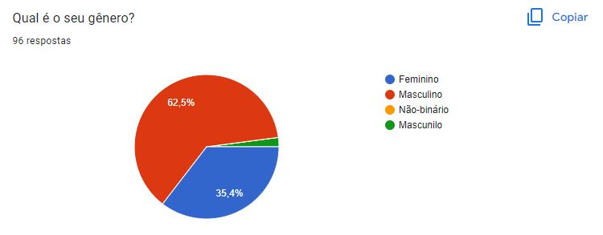
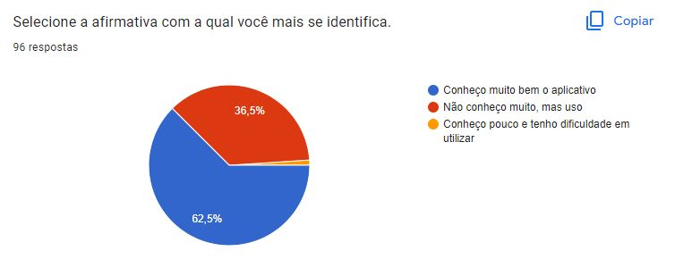
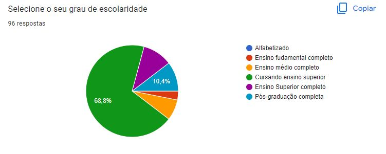
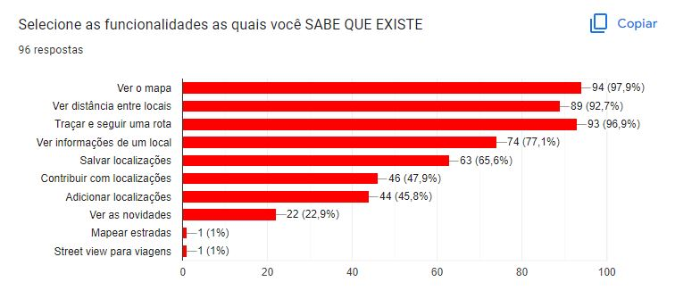
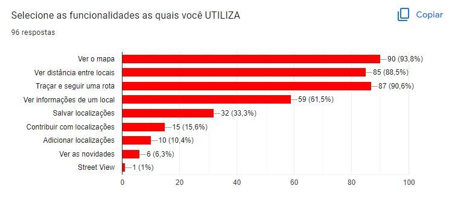

Questionário
1. Introdução
A técnica de questionário visa obter informações de um público maior, que nem sempre possui disponibilidade para participar de uma entrevista e consegue-se realizar a análise de resultados de forma mais rápida.
2. Atividades realizadas
2.1 Preparação
É importante que na fase de preparação sejam elencados os objetivos, informaçẽs e qual o público-alvo para que o questionário seja respondido de forma coerente. Para aumentar a veracidade das perguntas o formulário não pediu identificação dos usuários, apenas informações sobre o perfil.
Dentro desse aspecto, o questionário pode ser montado com dois tipos de perguntas, as abertas que o entrevistado pode responder da maneira que ele considera melhor e fechadas que dão um direcionamento mais objetivo nas respostas. Utilizamos o Google Forms para fazer o questionário, nele preparamos perguntas fechadas e abertas ao mesmo tempo(híbridas) pois existiam opções, mas caso o respondente quisesse ele poderia adicionar uma opção ou mais.
O questionário foi dividido em 3 partes: introdução e triagem, perfil do usuário e análise do aplicativo. Caso o usuário não tiver utilizado o Google Maps ele não pode responder o questionário.
2.2 Perguntas
Sendo assim, foram 6 questões de escolha única fechadas, 1 questão de escolha única híbrida, 3 questões de escolha múltipla híbridas e uma pergunta aberta. Abaixo estão as nossas perguntas e em seguida as opções, em caso de "Outro" o Google Forms abre uma caixa para escrita.
- Você já usou o Google Maps? Sim ou Não.
- Qual é a sua faixa etária? Menor que 17 anos; 17 a 20 anos; 21 a 39 anos; 40 a 59 anos; Maior que 59 anos.
- Qual é o seu gênero? Feminino, Masculino, Não-binário, Outros.
- Selecione a afirmativa com a qual você mais se identifica. Conheço muito bem o aplicativo; Não conheço muito, mas uso; Conheço pouco e tenho dificuldade em utilizar.
- Selecione a afirmativa com a qual você mais se identifica. Utilizo o google maps diariamente; Utilizo o google maps 2/3 vezes por semana; Raramente utilizo o google maps.
- Selecione o seu grau de escolaridade. Alfabetizado; Ensino fudamental completo; Ensino médio completo; Cursando ensino superior; Ensino Superior completo; Pós-graduação completa.
- Quais são os seus objetivos ao usar o Google Maps? Encontrar um estabelecimento; Traçar uma rota para uma localização; Ver a distância entre locais; Ver estabelecimentos ao redor de uma localização; Ver informações sobre um estabelecimento; Outros.
- Selecione as funcionalidades as quais você SABE QUE EXISTE. Ver o mapa; Ver distância entre locais; Traçar e seguir uma rota; Ver informações de um local; Salvar localizações; Contribuir com localizações; Adicionar localizações; Ver as novidades; Outros.
- Selecione as funcionalidades as quais você UTILIZA. Ver o mapa; Ver distância entre locais; Traçar e seguir uma rota; Ver informações de um local; Salvar localizações; Contribuir com localizações; Adicionar localizações; Ver as novidades; Outros.
- Comparando outros aplicativos de mobilidade qual é a sua prioridade em usar o Google Maps? Prefiro o Google Maps a outros; Dependendo da funcionalidade eu uso o Google Maps; Em último caso uso o Google Maps.
2.3 Resultados
No dia da análise dos resultados (27/11/2022) foram obtidas 96 respostas. O questionário foi espalhado em grupos de redes sociais de diferentes ambientes para tentar obter os mais variados tipos de usuário. Os resultados obtidos foram:
Pergunta 1: Como esperado somente quem já utilizou o aplicativo conseguiu responder ao questionário como pode ser observado na imagem abaixo.
Pergunta 2: A maior parte das respostas foi de 17 a 20 anos demonstrado no gráfico abaixo, porém foi uma diferença apenas de 2,1% entre o grupo 17 a 20 e o grupo 21 a 39 anos.

Pergunta 3: Inicialmente houve um erro ortográfico na opção masculino, como pode ser observado na figura 3, e algumas pessoas ainda selecionaram antes da correção, então definimos que os resultados de 'mascunilo' e 'Masculino' se referem ao mesmo grupo.

Pergunta 4: A maioria já conhecia o aplicativo e sabia utilizá-lo muito bem de acordo com a figura abaixo.

Pergunta 5: A maioria utiliza o Google Maps de 2/3 vezes por semana, como demonstrado na figura 5.
Pergunta 6: A figura 6 mostra o gráfico o qual diz que a maioria está cursando o Ensino Superior.

Pergunta 7: A maioria utiliza o aplicativo para traçar uma rota para uma localização de acordo com a imagem abaixo.
Pergunta 8: A maioria conhece as funcionalidades de ver mapa(94) para traçar rota(93) tendo uma diferença de apenas uma seleção entre as duas opções como pode ser observado na figura 8.

Pergunta 9: A maioria utiliza a opção de ver mapa de acordo com a figura 9.

Pergunta 10: A maioria prefere o Google Maps a outros aplicativos como demonstra a figura 10. Abrimos uma pergunta aberta para que selecionasse as outras opções e recebemos respostas relacionadas a: familiaridade com outros aplicativos, informações de trânsito que o Google Maps não fornece, achar o navegador de outro aplicativo mais fácil, interface mais amigável, rotas melhores e afirmações sobre o Google Maps estar desatualizado.
2.4 Finalização
Foi possível entender mais do perfil dos usuários que usam o aplicativo. Na tabela abaixo pode-se ver os requisitos que conseguimos coletar dos questionários:
| Descrição | Tipo |
|---|---|
| Deve ser possível pesquisar um estabelecimento | RF01 |
| Deve ser possível traçar uma rota | RF02 |
| Deve ser possível ver distância entre locais | RF03 |
| Deve ser possível ver estabelecimentos no mapa | RF04 |
| Deve ser possível ver informações sobre um estabelecimento | RF05 |
| Deve ser possível navegar pelo mapa pelo modo street view | RF06 |
| Deve ser possível melhorar o mapa adicionando informações de locais | RF07 |
| Deve ser possível salvar localizações buscadas | RF08 |
| Deve ser possível ver novos comentários e avaliações de outros usuários de estabelecimentos quaisquer | RF09 |
| As rotas devem ser traçadas de acordo com as políticas de trânsito de cada cidade | RNF01 |
Fonte: Grupo 5
3. Histórico de versão
| Data | Versão | Modificações | Autor(es) | Revisor(es) |
|---|---|---|---|---|
| 24/11/2022 | 1.0 | Criação da pagina | Luiza | Lucas Felipe |
| 27/11/2022 | 2.0 | Complemento com resultados | Alexia | Lucas Felipe |
| 05/12/2022 | 3.0 | Adiciona tabela com requisitos | Alexia | Iago |